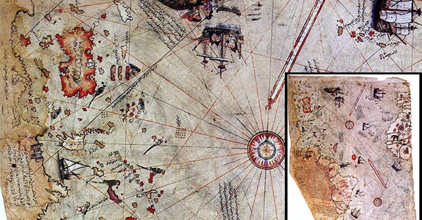

- Anasayfa
- Türk Korsanlarımız
- Yabancı Korsanlar
- Korsan Deniz Savaşları
Denizcilik Derecesi:
Piri Reis

Osmanlı denizci. Dünya haritaları ve denizcilik kitabıyla tanınmıştır. Doğum tarihi kesin olarak bilinmiyor. 1465-1470 arasında Gelibolu'da doğdu. Kahire'de öldü. Asıl adı Muhiddin Pirî'dir. Karamanlı Hacı Ali Mehmed'in oğlu ve ünlü Osmanlı denizcisi Kemal Reis'in yeğenidir. Akdeniz de korsanlık yapmakta olan amcasının yanında yaklaşık 1481'den sonra denize açıldı. 1487'de onunla birlikte İspanya'daki Müslümanlar'ın yardımına gitti. 1491-1493 arasında Sicilya, Sardunya, Korsika adalarına ve Güney Fransa kıyılarına yapılan akınlara katıldı. Amcasıyla birlikte Osmanlı Devleti'nin hizmetine girerek 1499-1502 Osmanlı-Venedik Savaşı'nda bir savaş gemisinde kaptanlık yaptı. 1511'de amcasının ölümü üzerine Gelibolu'ya çekilerek Kitab-ı Bahriye (Denizcilik Kitabı) üzerinde çalıştı ve 1513'te bir dünya haritası çizdi. 1516 Mısır seferinde Osmanlı donanmasında kaptan olarak savaştı. 1517'de ilk çizdiği haritayı I. Selim'e (Yavuz) sundu.

1521'de Kitab-ı Bahriye'yi tamamladıktan sonra 1522'de Rodos seferine katıldı.1524'te sadrazam Makbul İbrahim Paşa'yı Mısır'a götüren gemiye kılavuzluk etti. Sadrazamın ilgilenmesi üzerine 1525'te Kitab-ı Bahriye'yi yeniden düzenleyerek onun aracılığıyla I. Süleyman'a (Kanuni) sundu. 1528'de çizdiği ikinci haritasını da padişaha armağan etti. 1528'den sonra güney denizlerinde görev yaptı. Portekizlilerin Aden'i alması üzerine Süveyş'teki Osmanlı donanmasına kaptan atanarak 26 Şubat 1548'de Aden'i geri aldı. 1552'de önemli bir Portekiz üssü olan Maskat'ı ve ardından Kişm Adası'nı alarak Hürmüz Kalesi'ni kuşattı. Portekizliler'in Basra Körfezi'ni kapatmak istediklerini duyarak kuzeye yöneldi. Katar Yarımadası'na, Bahreyn Adası'na egemen olarak Mısır'a geçti.
Donanmayı Basra Körfezi'nde bıraktığı için sefer sırasında kendisinden yardımını esirgeyen Basra Valisi Kubâd Paşa'nın da girişimleriyle suçlu görülerek idam edildi. Büyük bir denizci olduğu kadar büyük bir haritacı olan Pirî Reis, korsanlık günlerinden başlayarak gezip gördüğü yerleri yabancı kaynaklardan da yararlanarak tarihi ve coğrafi özellikleriyle birlikte kitabında anlatmış ve haritalarını çizmiştir. Kitab-ı Bahriye'nin nazımla yazılan ve denizcilikle ilgili tüm bilgilerin toplandığı başlangıç bölümünde, genel açıklamalardan sonra Ege ve Akdeniz adaları tanıtılarak, denizle ilgili gözlem ve deneyim önemi vurgulanır. Fırtına, rüzgâr çeşitleri, pusula ve haritanın tanımından sonra dünyayı kaplayan denizler ve karaların oranı belirtilir.
Portekizliler'in denizcilikteki ilerlemeleri ve keşifleri, Çin Denizi, Hint Okyanusu, Akdeniz ve Ege Denizi'ndeki rüzgârlar, Basra Körfezi, Atlas Okyanusu ayrıntılı biçimde anlatılır. Düz yazı ile anlatımın başladığı haritalı bölüm asıl metni oluşturur. Bu bölümde Çanakkale Boğazı'ndan başlayarak Ege Denizi kıyı ve adaları, Adriyatik denizi kıyıları, Batı İtalya, Güney Fransa, Doğu İspanya kıyılarıyla çevresindeki adalara ilişkin tarihi, coğrafi bilgiler verilerek kuzey Afrika kıyıları, Filistin, Suriye, Kıbrıs ve Anadolu kıyıları izlenerek Marmaris'te tüm Akdeniz'in havzası noktalanır. 1513'te çizdiği ilk haritasında Kristof Kolomb'un 1498'de çizdiği Amerika haritasından, Portekiz ve Arap haritalarından yararlandığını belirtir.
Elde kalan parçası Avrupa ve Afrika'nın batı kıyılarıyla Atlas Okyanusunu, Antil Adalarını, Orta ve Güney Amerika'yı gösterir. 1528'de çizdiği ikinci haritasından günümüze kalan parça, büyük bir dünya haritasının kuzey batı köşesi olup Atlas Okyanusu'nun kuzeyini, kuzey ve orta Amerika'nın yeni keşfedilmiş kıyılarını ve Grönland'dan Florida'ya uzanan kıyı şeridini içerir. Adalar ve kıyılar son keşiflere dayalı olarak daha doğru çizilidir. Keşfedilmeyen yerler ise beyaz bırakılarak, bilinmediği için çizilmediği belirtilir. İlk haritadan daha büyük ölçekli ve gelişkin olan ikincisi, teknik olarak döneminin en ileri örneğidir. - Yabancı Korsanlar